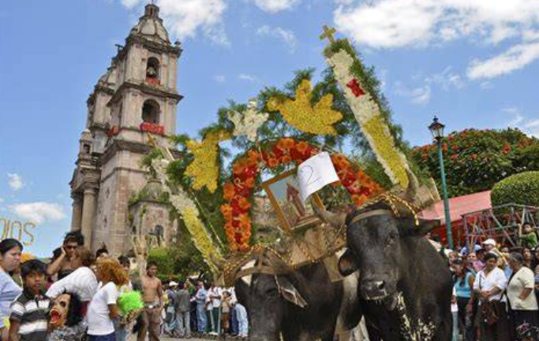
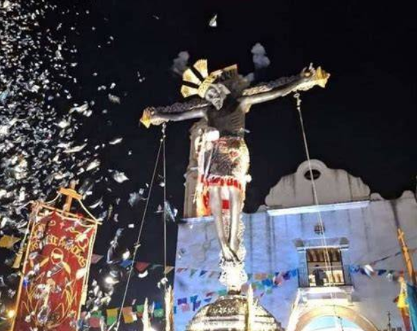

EN HONOR A SAN FRANCISCO DE ASIS.
La fiesta más importante de la Parroquia de San Francisco de Asís en Valle de Bravo es la que se celebra el 4 de octubre, en honor a San Francisco de Asís, quien es el patrono del pueblo y del templo. Ese día todo Valle se llena de gente, porque no es solo una misa, es la fiesta patronal que reúne a los vallesanos de nacimiento, a los que ya viven ahí y a muchos visitantes que vienen a ver la tradición. La parroquia, que está en la plaza principal y es considerada el templo más alto del Estado de México, se convierte en el centro de toda la celebración.
La preparación empieza mucho antes del 4 de octubre, con la novena a San Francisco de Asís. Durante esos nueve días hay rezos, misas y peregrinaciones de los diferentes grupos de la parroquia, como los niños, los jóvenes, los ministros, los lectores y los barrios. Es un tiempo en el que la gente se prepara espiritualmente, pero también es cuando el pueblo empieza a verse diferente, porque las familias empiezan a adornar sus casas para recibir la fiesta del patrono.
Una de las tradiciones más bonitas y más vallesanas de esta fiesta son los faroles de papel. Desde la noche del 25 de septiembre hasta el 4 de octubre, muchas familias cuelgan faroles hechos con madera, papel china y una vela en la fachada de sus casas, para alumbrar la festividad y homenajear a San Francisco. Junto con los faroles, también se acostumbra poner una cruz de pericón, una flor que solo se da en esta época del año, en la puerta que da a la calle durante la novena. Antes, cuando Valle todavía no tenía presa, se dice que todo el pueblo se iluminaba de noche con esos faroles.
EL CRISTO NEGRO, SANTA MARIA.
El Cristo Negro se venera en el Templo de Santa María Ahuacatlán, que está en el barrio de Santa María Ahuacatlán, en Valle de Bravo. Es el barrio más viejo del pueblo y ahí está uno de los templos más importantes para los vallesanos. Aunque el templo empezó siendo la Capilla del Calvario y después se reconstruyó en 1864 dedicada a la Asunción de María, hoy todo el mundo lo conoce como la iglesia del Cristo Negro, porque él es el que está en el altar principal y el que más devoción tiene.
Un 3 de mayo, mientras festejaban la Santa Cruz, los de La Peña tuvieron una pelea terrible con sus enemigos, los de Ahuacatlán, y la ermita de carrizo y zacatón donde estaba el Cristo se quemó. Entre las cenizas encontraron la imagen intacta, pero totalmente negra. El sacerdote les explicó que ese cambio era para liberarlos del odio y el rencor y lograr la paz en el Valle de Temascaltepec, hoy Valle de Bravo. Después los dos grupos hicieron las paces y juntos llevaron la imagen a la capilla de Ahuacatlán, por eso se le llama el Señor de Santa María.
Su fiesta más grande es el 3 de mayo, día de la Santa Cruz, y durante los primeros días de mayo Valle se llena de fieles de todo México. Desde las 5 de la mañana hay procesión, mañanitas, misa de aurora y bendición de cruces de madera para los albañiles. En la tarde hay mojigangas, peregrinaciones, danzas, toritos, castillos y fuegos artificiales, por eso es una de las fiestas patronales más queridas y el Cristo Negro es considerado el santo más milagroso del pueblo.


FESTIVIDAD DE LAS ALMAS.
El Festival de las Almas es el festival cultural más importante de Valle de Bravo y se hace cada año a finales de octubre y principios de noviembre, en la temporada de Día de Muertos. Nació en 2003 como un encuentro para acercar el arte a la gente y honrar las tradiciones de Día de Muertos, con la idea de hacer algo parecido al Festival Cervantino. Todos sus eventos son gratuitos y son organizados por la Secretaría de Cultura y Turismo del Estado de México.
Durante nueve días Valle se convierte en un escenario abierto, con conciertos masivos cada noche a las 8 de la noche en La Velaría, donde se han presentado artistas como Ximena Sariñana, Enjambre, Majo Aguilar, Sonora Dinamita y Alejandra Guzmán. También hay teatro, danza, cine, literatura, talleres y exposiciones en el Jardín Central, los museos y los embarcaderos. Es un festival que mezcla el arte contemporáneo con el folclor mexicano y la naturaleza de Valle.
Sus eventos más tradicionales son el desfile Metamorfosis entre la Vida y la Muerte, con catrinas, comparsas y mojigangas, y el desfile CatrínValle, donde la gente sale maquillada de catrina a recorrer las calles. Otro evento único es el concurso de embarcaciones Altar Flotante, donde barcos y lanchas decoradas con altares, flores y velas navegan sobre el lago. Por eso el Festival de las Almas es un llamado a la memoria y a honrar a los seres queridos que ya no están.